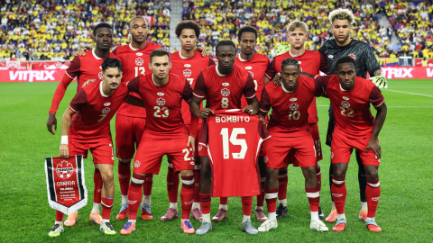

Canadá 🇨🇦
Sin títulos📍 Sede / Ciudad: Toronto (BMO Field) / Vancouver (BC Place)

🇨🇦 Selección de Canadá rumbo al Mundial 2026
Canadá nunca ha conquistado la Copa Mundial de la FIFA. Su crecimiento futbolístico en los últimos años la ha convertido en una de las selecciones más fuertes de la CONCACAF y será uno de los países anfitriones del Mundial 2026.
Participaciones (3)
1986, 2022, 2026.
Estadísticas Mundiales
0 Victorias | 0 Empates | 4 Derrotas
⭐ Mejor resultado: Fase de grupos
Clasificación al Mundial 2026
Canadá participa automáticamente por ser uno de los tres países anfitriones del Mundial 2026 junto con México y Estados Unidos.
Historia en la Copa
Después de debutar en España 1986, Canadá volvió a un Mundial en Qatar 2022 tras una brillante eliminatoria. Con una nueva generación de futbolistas, busca consolidarse entre las mejores selecciones de Norteamérica.
💡 Curiosidad
Alphonso Davies marcó el primer gol de Canadá en la historia de los Mundiales durante Qatar 2022 frente a Croacia.
Jugadores Convocados
- Milan Borjan
- Dayne St. Clair
- Alphonso Davies
- Jonathan David
- Cyle Larin
- Stephen Eustáquio
- Tajon Buchanan
- Ismaël Koné
- Moïse Bombito
- Alistair Johnston
- Richie Laryea
- Derek Cornelius